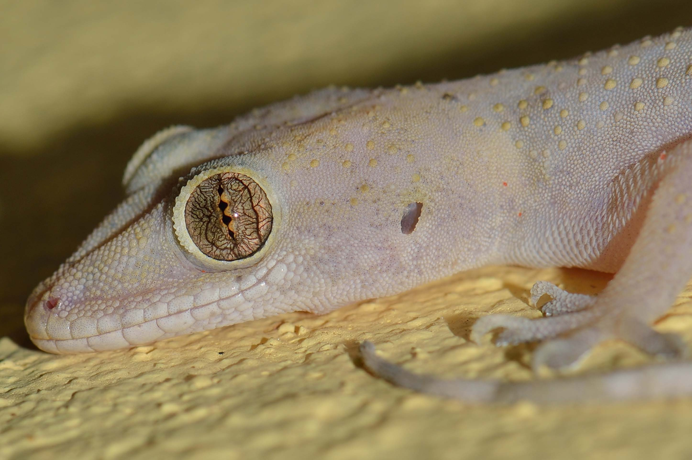

Geckos on Curaçao
While at the North Carolina Museum of Natural Sciences, I had the opporutnity to lead several projects aimed at better understanding the natural history of cryptic geckos on the Dutch Caribbean Island of Curaçao. There are three species of gecko native to Curaçao- Thecadactylus rapicauda, Phyllodactylus martini, and Gonatodes antillensis- and one invasive species of concern- Hemidactylus mabouia. Hemidactylus mabouia is one of the most successful, widespread invasive reptile species and has become ubiquitous across tropical urban settings in the Western Hemisphere, including Curaçao. Its ability to thrive in close proximity to humans has been linked to the rapid disappearance of native geckos. On Curaçao, increased urbanization of the island's "mondi" habitat rasies the question: are native gecko populations being displaced by Hemidactylus mabouia? The following work aims to address this and related topics.
Comparing Ecomorphology and Diet of native Phyllodactylus martini and invasive Hemidactylus mabouia
Aspects of Hemidactylus mabouia natural history and ecomorphology, often assumed to be linked with this effect on native populations, remain understudied or untested. Here, we combine data from ∂15N and ∂13C stable isotopes, stomach contents, and morphometric analyses of traits associated with feeding and locomotion to test alternate hypotheses of displacement between H. mabouia and a native gecko, Phyllodactylus martini, on the island of Curaçao.
Geckos as Transport Hosts for Caribbean Parasites
Many gecko species are human commensals with activity periods that overlap temporally with those of domestic cats, making them prime candidates as potential transport hosts for cat parasites. However, no studies have reported geckos as paratenic hosts for felid parasites on any Caribbean island. Here we report the first records of subcutaneous oligacanthorhynchid cystacanths on the Venezuelan Coastal Clawed Gecko (Gonatodes antillensis) based on specimens collected in Curaçao and Bonaire.
Endolymphatic Sac use in Gonatodes Antillensis
This study aims to fill a gap in our understanding of the reproductive biology of an enigmatic nocturnal gecko endemic to the islands of Curaçao and Bonaire: Gonatodes antillensis. Using radiographs of specimens from natural history collections, we conduct the first investigation of the potential role of endolymphatic sacs in the reproduction of this species.